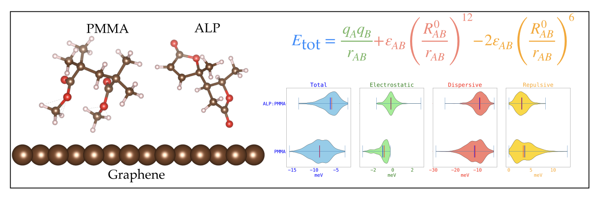
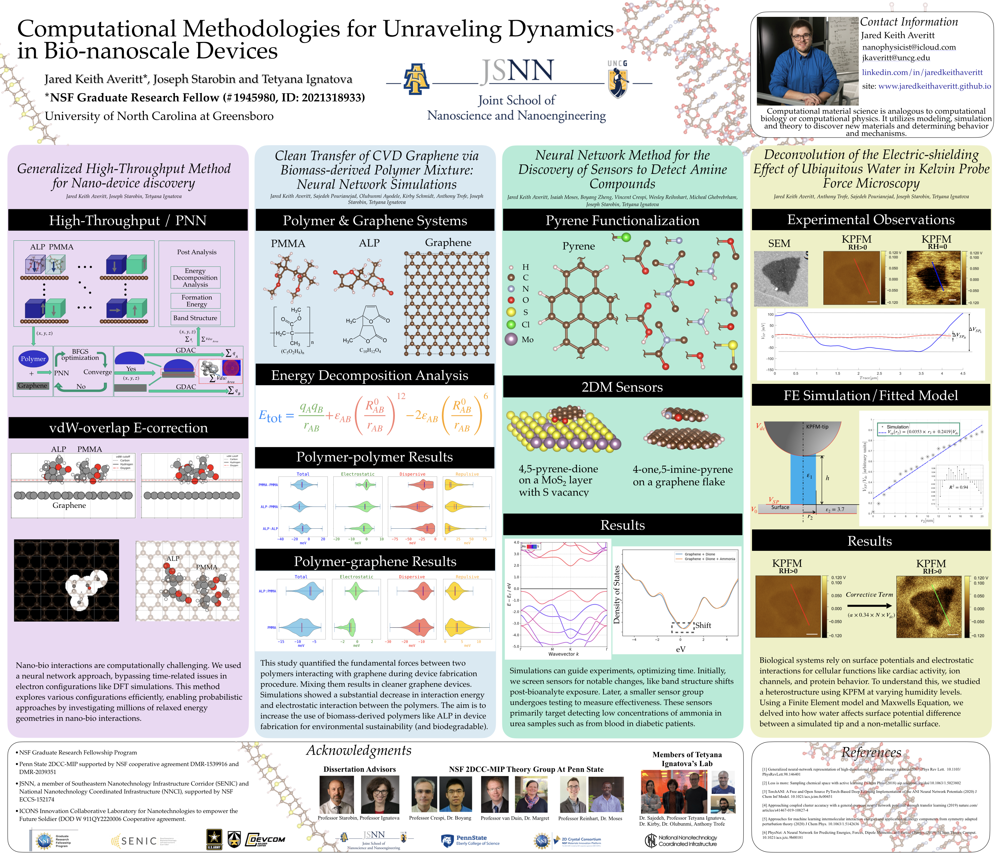
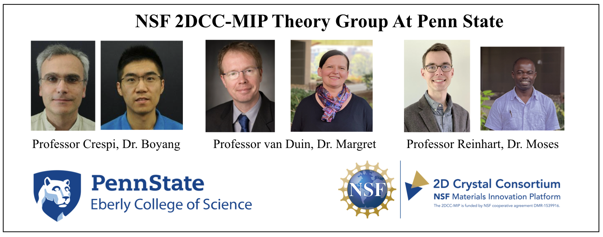
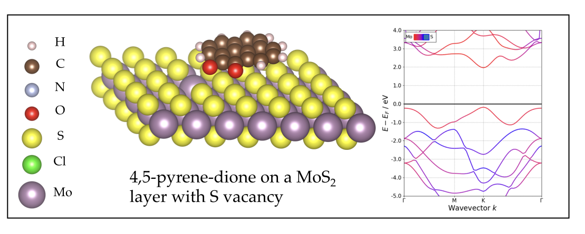
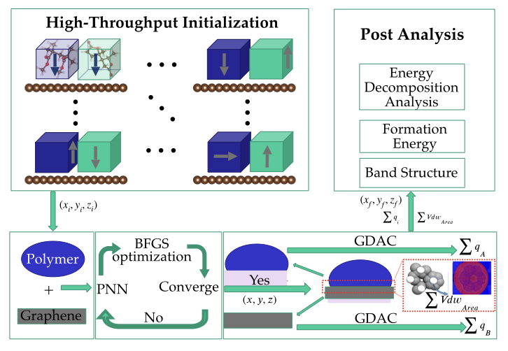
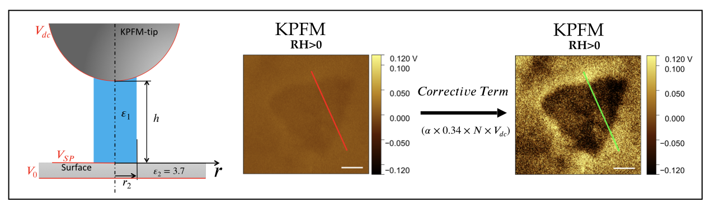

Polymer transfer paper in review

This study quantified the fundamental forces between two polymers interacting with graphene during a device fabrication procedure called polymer-assisted transfer techneque of CVD graphene. Mixing them results in cleaner graphene devices. Simulations showed a substantial decrease in interaction energy and electrostatic interaction between the polymers and the graphene surface. The aim is to increase the use of biomass-derived polymers like ALP in device fabrication for environmental sustainability (and biodegradable).
Presenting at the NSF Nanoscience and Nanoengineering Grantees Conference

J.K. Averitt, Joeseph Starobin, Tetyana Ignatova. “Computational Materials Design of Optical Based Nanoscale Sensing Devices”. NSF Nanoscale Science and Engineering Grantees Conference. Alexandria, VA. December 7-8, 2023. Poster
nseresearch.org/2023/posters/Jared_Averitt_NSF_Grantees_Poster_11_2023.pdf
Visiting Scholar at Penn State to develop NN method for sensor design

Conducting computational research at the NSF-funded Two-Dimensional Crystal Consortium – Materials Innovation Platform Theory Group, developing a neural network and algorithm for designing MoS2 - Pyrene optical sensors. I performed forcefield training for ReaxFF, studying polymer adhesion on defective graphene surfaces under its creator's guidance. Findings were presented through three posters, and a manuscript is currently in preparation.
Keeping soldiers save through Engagement in research with the Army DEVCOM Soldier Center

Engaging with soldiers and veterans, I grasp their specific safety needs, simulate reusable nanoscale optical sensors for extreme chemical hazard detection, and develop a neural network method to screen for ammonia and phosphate compounds. I've shared these findings through three posters.
Development of a Generalized Methodology to perform and analyze High-Throughput Energy Minima Molecular - 2DM Systems

Multi-molecular interactions with two dimensional materials are computationally challenging. We used a neural network approach, bypassing time-related issues in electron configurations like DFT simulations. This method explores various configurations efficiently, enabling probabilistic approaches by investigating millions of relaxed energy geometries in atomic scale interactions.
NSF XSEDE Start-up Allocations: Modeling of molecules adsorbed on the surface of 2D materials: multi-component analysis
I am currently scaling up simulations to model the behavior of small molecules on graphene structures. This involves in-depth Density Functional Theory (DFT) and classical molecular dynamics (MD) simulations using VASP (DFT) or LAMMPS (MD). Having outgrown the initial setup. The project spans geometry optimization, ground state energy calculations, and extensive output analysis, requiring 1,600 node hours on Stampede 2. Additionally, the third phase, focusing on output analysis, is externally funded and covers energy decomposition, adhesion energy calculations, Van der Waals area overlap, and optical parameter calculations.
Modeling Surface Probe Microscopy to Quantify Surface Potential of Samples in Humid Conditions

Many systems rely on surface potentials and electrostatic interactions including biological systems for cellular functions like cardiac activity, ion channels, and protein behavior. To understand this, we studied a heterostructure using KPFM at varying humidity levels. Using a Finite Element model and Maxwells Equation, we delved into how water affects surface potential difference between a simulated tip and a non-metallic surface.

{kind=link}
{kind=link}
{kind=link}
{kind=link}
{kind=link}